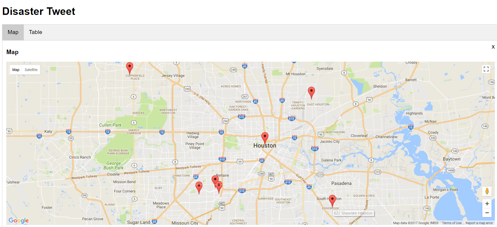
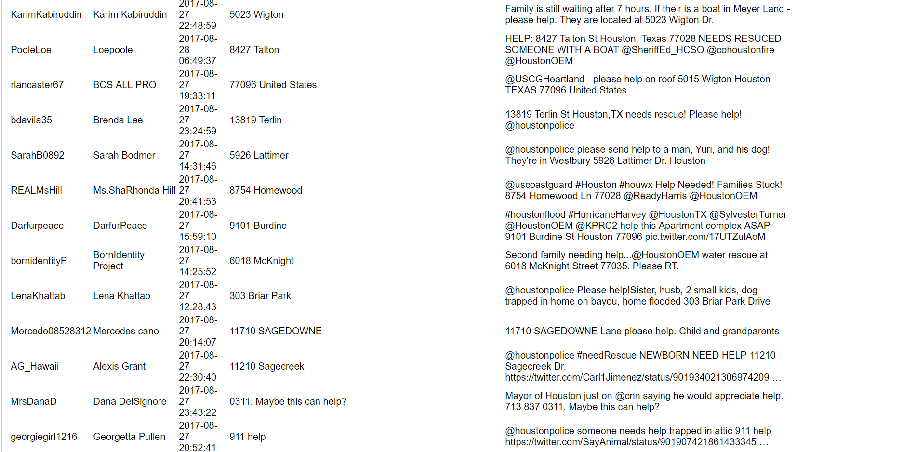
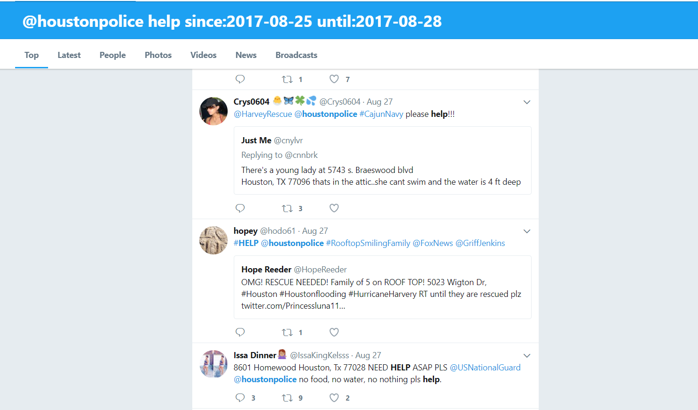

| Index | My Bio | Course Works | Experience and Projects | Publications | Contact Me |
Inspiration During Hurricane Harvey, people in Houston were unable to reach 911 because the line is jammed by people asking for help. Instead, a lot of people post their or relative's address on Twitter and tagged @Houstonpolice and @Houstonoem. However, there is no existing way of telling these urgent messages apart from regular tweets expressing sentiments. We build Disaster Tweet to help people get the rescue they needed in future catastrophes.How we built itUsing Twitter API, we grabbed all tweets containing the search key words, in this case, is @houstoneom help and @houstonpolice help. Using the Twitterscaper library, we can grab data without repetition at certain time intervals. Then each tweet is passed into usaddress library, to filter out tweets with potential addresses. We analyse the address and classify those with usable number and street name as valid address. These addresses, along with time stamp, real names of people and the tweet itself is sent into a database. On the front end, the information is presented on a website with google maps api to show the location of rescue requests on a map. Rescuers are allowed to change the status of messages in the database, to mark people as being rescued. |
   |